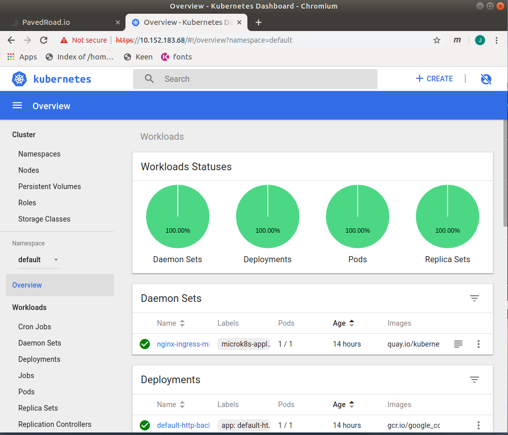

Overview
Kubernetes support in your development enviornment is provided via microk8s.
Kubernetes subjects
Training content
Enabling addons
Addons
The initial install of microk8s includes only the upstream distribution. However, microk8s supports several popular add-ons that can be enabled.
Get a list of available add-ons using microk8s.status.
microk8s.status
$ microk8s.status
microk8s is running
addons:
jaeger: disabled
fluentd: disabled
gpu: disabled
storage: enabled
registry: enabled
rbac: disabled
ingress: disabled
dns: enabled
metrics-server: disabled
linkerd: disabled
prometheus: disabled
istio: disabled
dashboard: enabled
microk8s.enable [list of services to enable]
Usemicrok8s.enable command to add services.
Do not use sudo, if a password is required, microk8s will
prompt you as shown below:
$ microk8s.enable ingress dns
Enabling Ingress
deployment.extensions/default-http-backend created
service/default-http-backend created
serviceaccount/nginx-ingress-microk8s-serviceaccount created
clusterrole.rbac.authorization.k8s.io/nginx-ingress-microk8s-clusterrole created
role.rbac.authorization.k8s.io/nginx-ingress-microk8s-role created
clusterrolebinding.rbac.authorization.k8s.io/nginx-ingress-microk8s created
rolebinding.rbac.authorization.k8s.io/nginx-ingress-microk8s created
configmap/nginx-load-balancer-microk8s-conf created
daemonset.apps/nginx-ingress-microk8s-controller created
Ingress is enabled
Enabling DNS
Applying manifest
service/kube-dns unchanged
serviceaccount/kube-dns unchanged
configmap/kube-dns unchanged
deployment.extensions/kube-dns configured
Restarting kubelet
[sudo] password for jscharber:
DNS is enabled
microk8s.disable [list of services to enable]
Usemicrok8s.disable command to remove services.
Do not use sudo, if a password is required,
microk8s will prompt you as shown below:
$ microk8s.disable ingress
Disabling Ingress
deployment.extensions "default-http-backend" deleted
service "default-http-backend" deleted
serviceaccount "nginx-ingress-microk8s-serviceaccount" deleted
clusterrole.rbac.authorization.k8s.io "nginx-ingress-microk8s-clusterrole" deleted
role.rbac.authorization.k8s.io "nginx-ingress-microk8s-role" deleted
clusterrolebinding.rbac.authorization.k8s.io "nginx-ingress-microk8s" deleted
rolebinding.rbac.authorization.k8s.io "nginx-ingress-microk8s" deleted
configmap "nginx-load-balancer-microk8s-conf" deleted
daemonset.apps "nginx-ingress-microk8s-controller" deleted
Ingress is disabled
Daily usage
Starting, Stopping, and Resetting your cluster microk8s
You can use themicrok8s.start and microk8s.stop
commands to start and stop the cluster.
Microk8s is extremely fast to start and stop. So it is common to
free up resources by stopping it when not needed.
jscharber@ubuntu:~$ time microk8s.start
[sudo] password for jscharber:
Started.
Enabling pod scheduling
node/ubuntu already uncordoned
real 0m14.862s
user 0m0.591s
sys 0m0.761s
jscharber@ubuntu:~$
Stopping
jscharber@ubuntu:~$ time microk8s.stop
Stopped.
real 0m0.906s
user 0m0.034s
sys 0m0.116s
Resetting
In testing, it is often required to clear all previous state and
start with a clean cluster. The microk8s.reset accomplishes this. When executes, it resets all the cluster state to that of a new cluster.
jscharber@ubuntu:~$ /snap/bin/microk8s.reset [sudo] password for jscharber: Calling clean_cluster Cleaning resources in namespace container-registry endpoints "registry" deleted event "registry-7d65c894c-pscpq.15a60802274fa135" deleted event "registry-7d65c894c-pscpq.15a6080281fb7405" deleted event "registry-7d65c894c-pscpq.15a60802c569f501" deleted event "registry-7d65c894c-pscpq.15a60802f83a9cc8" deleted event "registry-7d65c894c-pscpq.15a6096d1f1e01a1" deleted event "registry-7d65c894c-pscpq.15a6096dc4e935ea" deleted event "registry-7d65c894c-pscpq.15a6096e5108b8c5" deleted event "registry-7d65c894c-pscpq.15a6096eb6c16c4f" deleted Lots of output....... namespace "container-registry" deleted namespace "kube-node-lease" deleted Removing CRDs No resources found Waiting for kubernetes resources to be released Cleaning up addons client binaries..
Accessing dashboards
There are two way to find the endpoints for cluster resources:
Kubectl to display all services
Execute microk8s.kubectl get services --all-namespaces.
Note, we use --all-namespaces. The --all-namespaces option
displays all services in the cluster irrespective of namespace.
Example:
jscharber@ubuntu:~$ microk8s.kubectl get services --all-namespaces NAMESPACE NAME TYPE CLUSTER-IP EXTERNAL-IP PORT(S) AGE container-registry registry NodePort 10.152.183.735000:32000/TCP 46s default default-http-backend ClusterIP 10.152.183.215 80/TCP 39s default kubernetes ClusterIP 10.152.183.1 443/TCP 8m34s default simplest-agent ClusterIP None 5775/TCP,5778/TCP,6831/TCP,6832/TCP 6s default simplest-collector ClusterIP None 9411/TCP,14267/TCP,14268/TCP 6s default simplest-query ClusterIP None 16686/TCP 6s kube-system heapster ClusterIP 10.152.183.139 80/TCP 55s kube-system kube-dns ClusterIP 10.152.183.10 53/UDP,53/TCP 54s kube-system kubernetes-dashboard ClusterIP 10.152.183.68 443/TCP 56s kube-system monitoring-grafana ClusterIP 10.152.183.233 80/TCP 55s kube-system monitoring-influxdb ClusterIP 10.152.183.228 8083/TCP,8086/TCP 55s
Kubectl to display cluter information
Enter: microk8s.kubectl cluster-info as shown below.
Example
jscharber@ubuntu:~$ microk8s.kubectl cluster-info
Kubernetes master is running at https://127.0.0.1:16443
Heapster is running at https://127.0.0.1:16443/api/v1/namespaces/kube-system/services/heapster/proxy
KubeDNS is running at https://127.0.0.1:16443/api/v1/namespaces/kube-system/services/kube-dns:dns/proxy
Grafana is running at https://127.0.0.1:16443/api/v1/namespaces/kube-system/services/monitoring-grafana/proxy
InfluxDB is running at https://127.0.0.1:16443/api/v1/namespaces/kube-system/services/monitoring-influxdb:http/proxy
To further debug and diagnose cluster problems, use 'kubectl cluster-info dump'.
jscharber@ubuntu:~$
To get details on a service.
Use the --namespace=xxxxx option to limit your search, followed by "describe service" and the name of the service. In the example below, you can see the ClusterIP is 10.152.183.68 and kubernetes-dashboard is listening on port 443.
This information can be used to bring up the dashboard in the browser of your choice.
For example,microk8s.kubectl --namespace=kube-system describe service kubernetes-dashboard
jscharber@ubuntu:~$ microk8s.kubectl --namespace=kube-system describe service kubernetes-dashboard
Name: kubernetes-dashboard
Namespace: kube-system
Labels: k8s-app=kubernetes-dashboard
Annotations: kubectl.kubernetes.io/last-applied-configuration:
{"apiVersion":"v1","kind":"Service","metadata":{"annotations":{},"labels":{"k8s-app":"kubernetes-dashboard"},"name":"kubernetes-dashboard"...
Selector: k8s-app=kubernetes-dashboard
Type: ClusterIP
IP: 10.152.183.68
Port: 443/TCP
TargetPort: 8443/TCP
Endpoints: 10.1.1.32:8443
Session Affinity: None
Events:
Use the IP and port information to access the dashboard
Authentication
You need to authenticate for full access to portal capabilities
basic auth
If you want to use basic authenticaion, those credientials are stored in:/var/snap/microk8s/current/credentials/basic_auth.csv
client.config
If you want to use certificat authenticaion, when prompted select:/var/snap/microk8s/current/credentials/client.config
Managing the cluster
snap alias
snap alias microk8s.kubectl kubectl
snap usalias kubectl
microk8s.status
The microks8.status command shows the status of
the cluster. The output includes the list of add-ons and
their status; enabled or disabled. When the cluster is first
starting up, you can add the --wait-ready option,
or specify a timeout using the --timeout seconds
option.
If you are going to use the output of the microk8s.status
command in a program, add the --yaml option.
jscharber@ubuntu:~$ microk8s.status --yaml
microk8s:
running: true
addons:
jaeger: disabled
fluentd: disabled
gpu: disabled
storage: enabled
registry: enabled
rbac: disabled
ingress: enabled
dns: enabled
metrics-server: disabled
linkerd: disabled
prometheus: disabled
istio: disabled
dashboard: enabled
microk8s.inspect
To troubleshoot a non-functioning MicroK8s deployment, start by
running the microk8s.inspect command. This
command performs a set of tests against MicroK8s and collects
traces and logs in a report tarball. Each daemons that make up
the Kubernetes master are listed in the output.
In case any of the daemons mentioned above are failing use
the journalctl command to review their logs.
For example,
journalctl -u snap.microk8s.{daemon-name}.service. microk8s.inspect.
The output of the
journalctl can include suggestions on potential
issues and recommend actions.
jscharber@ubuntu:~$ microk8s.inspect
Inspecting services
Service snap.microk8s.daemon-containerd is running
Service snap.microk8s.daemon-apiserver is running
Service snap.microk8s.daemon-proxy is running
Service snap.microk8s.daemon-kubelet is running
Service snap.microk8s.daemon-scheduler is running
Service snap.microk8s.daemon-controller-manager is running
Service snap.microk8s.daemon-etcd is running
Copy service arguments to the final report tarball
Inspecting AppArmor configuration
Gathering system info
Copy network configuration to the final report tarball
Copy processes list to the final report tarball
Copy snap list to the final report tarball
Inspect kubernetes cluster
WARNING: IPtables FORWARD policy is DROP. Consider enabling traffic forwarding with: sudo iptables -P FORWARD ACCEPT
The change can be made persistent with: sudo apt-get install iptables-persistent
Building the report tarball
Report tarball is at /var/snap/microk8s/608/inspection-report-20190608_080955.tar.gz
jscharber@ubuntu:~$ journalctl -u snap.microk8s.daemon-etc.service.microk8s.inspect
-- Logs begin at Sun 2019-05-26 00:08:04 PDT, end at Sat 2019-06-08 08:12:23 PDT
-- No entries --
microk8s.config
- Write it to ~/.kube/config — the default configuration location
- Pass it as a parameter to kubectl (every time)
kubectl --kubeconfig=./client-config ... - Export it via the environment variable (once per terminal
session)
export KUBECONFIG=/absolute/path/to/client-config
microk8s.kubectl config view --raw > $HOME/.kube/config
jscharber@ubuntu:~$ microk8s.config
apiVersion: v1
clusters:
- cluster:
certificate-authority-data: LS0tLS1CRUdJTiBDRVJUSUZJQ0FURS0tLS0tCk1JSUMvakNDQWVhZ0F3SUJBZ0lKQUtvK3d0MzhkK3FFTUEwR0NTcUdTSWIzRFFFQkN3VUFNQlF4RWpBUUJnTlYKQkFNTUNURXlOeTR3TGpBdU1UQWVGdzB4T1RBMU1EY3lNalE1TVRGYUZ3MDBOakE1TWpJeU1qUTVNVEZhTUJReApFakFRQmdOVkJBTU1DVEV5Tnk0d0xqQXVNVENDQVNJd0RRWUpLb1pJaHZjTkFRRUJCUUFEZ2dFUEFEQ0NBUW9DCmdnRUJBTWZzSXZhNTlUaXVYU1lWZDFmYXlkVmFQbndkclU3clVZalR2dmNsdE5XVG5BOEVSK3hmblV4UTA2OVUKR3VkQ25WaklLOVQ5ZExjQkp5Y0ZmYnVYTjdJMmVWYUJVcVhKeGdVVG1pRjJlUWZkTkRINUt1dzRJUzkxajJKUwpSakJjcXNyWlBXVjNqdEFaMXNDWE1IVnZoR0IyNmtYUm1OUCtoNW8wNklDeWpndUFxQTUrL2VmM3RvbmUyRDA2CjNuT3p6cGlkS2FGdVFRMGdBZlVGMFdZKzhsUVdsTkk1UHl3UHZ6UUdyT3pOeUZBcmVQaXRGeWpJMHpweFRKdXIKRDh1TlQ4dWhaS1pQOCt6cUtpZFJqTGdQczhKUmhIUjdaRFh5R1Ruakg0STludGxTa3JBOEM4ajlTZHNSS2RxUwpzNVpvUHVqSXo2VUxtbFZLVWhuSE1pQmtOZVVDQXdFQUFhTlRNRkV3SFFZRFZSME9CQllFRkVQaHdBV2ZoNGpMCjJJZS9yUFFpVmo2Vm5NYytNQjhHQTFVZEl3UVlNQmFBRkVQaHdBV2ZoNGpMMkllL3JQUWlWajZWbk1jK01BOEcKQTFVZEV3RUIvd1FGTUFNQkFmOHdEUVlKS29aSWh2Y05BUUVMQlFBRGdnRUJBTHQzV09Kd3A2SnBQWlNQMHB2WQpaVnB2RFVocXBhL0lIbjQ2bTRsZDVxZGUwTTF5a0N6d2hWSnZTNXNWQjlBS2dvS2wzbzNXUWExU1B6RnFEZDdXCnJPMkpxQ0xUVk9TbGJWMkVNME1vRUxyNmR1S1BCc0xISEJ4TzVOZFJvRndBdnFhOENmeXZwa2FsSGx1dHpqdnMKcC96cXF1dWpIU0NuZ3pSeXNGZ2tZMk1EaGkvQkQ2WGRvT0NEK1lpRVh1VkIvcWE3cWNzZnNIVVE3RFNWVTNhbgp1aGlsYnVEMU84NnBZdC9LaVZvZG9hV2R6YklvNkVmcW4wTXJaVGJuZUVjMThPNEJ2a1ZkSWZiVzkzMUUyMWl6ClpkNEpoZEhBcDIyeWN0M0lwRFFqWDl4Q2xzM080a3JUaWFGOFpBMERlZC96MnVIYjAzVk5qWFM0RTFkYjh5NXIKOEM0PQotLS0tLUVORCBDRVJUSUZJQ0FURS0tLS0tCg==
server: https://192.168.150.179:16443
name: microk8s-cluster
contexts:
- context:
cluster: microk8s-cluster
user: admin
name: microk8s
current-context: microk8s
kind: Config
preferences: {}
users:
- name: admin
user:
username: admin
password: ###################################
Kubernetes wrapper commands
| Command | Link to documentation |
|---|---|
microk8s.ctr |
containerd CLI |
microk8s.kubectl |
Kubernetes CLI |
microk8s.istio |
istioctl CLI |
microk8s.linkderd |
linkerd CLI |
Jaeger
Jaeger is used for monitoring and troubleshooting microservices-based distributed systems, including:
- Distributed context propagation
- Distributed transaction monitoring
- Root cause analysis
- Service dependency analysis
- Performance / latency optimization
Fluentd
Fluentd is an open source data collector for unified logging layer. Fluentd allows you to unify data collection and consumption for better use and understanding of data.
Fluentd documentationGPU support
Expose GPU(s) to MicroK8s by enabling the nvidia-docker runtime and nvidia-device-plugin-daemonset. Requires NVIDIA drivers. These driver are already installed on most systems.
Storage
Creates a default storage class. This storage class makes use of the hostpath-provisioner pointing to a directory on the host.
RBAC
By default, RBAC is disabled. If you enable RBAC, you can use
--authorization-mode=AlwaysAllow as needed.
Note: Other add-ons may not work with RBAC enabled.
Ingress controllers
What is Ingress?
Ingress, added in Kubernetes v1.1, exposes HTTP and HTTPS routes from outside the cluster to services within the cluster. Rules defined on the Ingress resource control traffic routing.
internet
|
[ Ingress ]
--|-----|--
[ Services ]
An Ingress can be configured to give services externally-reachable URLs, load balance traffic, terminate SSL, and offer name-based virtual hosting. An Ingress controller is responsible for fulfilling the Ingress, usually with a load balancer, though it may also configure your edge router or additional frontends to help handle the traffic. An Ingress does not expose arbitrary ports or protocols. Exposing services other than HTTP and HTTPS to the internet typically uses a service of type Service.Type=NodePort or Service.Type=LoadBalancer.
Kuberentes metrics server
The k8s metrics server provides a unified method for collection resource usage information. You collected data by making calls to the metrics server the Metrics API. More information about the Metrics Server is here.
Istio
Istio makes it easy to create a network of deployed services with load balancing, service-to-service authentication, monitoring, and more, with few or no code changes in service code. You add Istio support to services by deploying a special sidecar proxy throughout your environment that intercepts all network communication between microservices, then configure and manage Istio using its control plane functionality, which includes:
- Automatic load balancing for HTTP, gRPC, WebSocket, and TCP traffic.
- A pluggable policy layer and configuration API supporting access controls, rate limits and quotas.
- Automatic metrics, logs, and traces for all traffic within a cluster, including cluster ingress and egress.
- Secure service-to-service communication in a cluster with strong identity-based authentication and authorization.
Kubernetes dashboard
Kubernetes Dashboard is a general purpose, web-based UI for Kubernetes clusters. It allows users to manage applications running in the cluster and troubleshoot them, as well as manage the cluster itself.
Dashboard documentationKnative
TBD
Open-FaaS
TBD
First Function
TBD